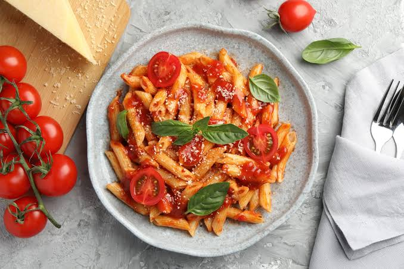
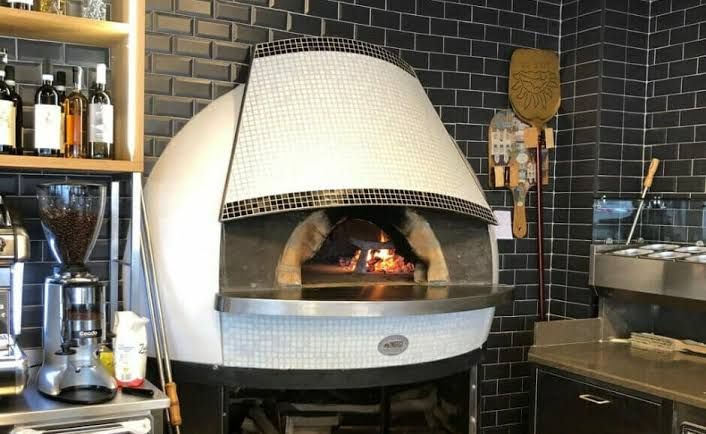
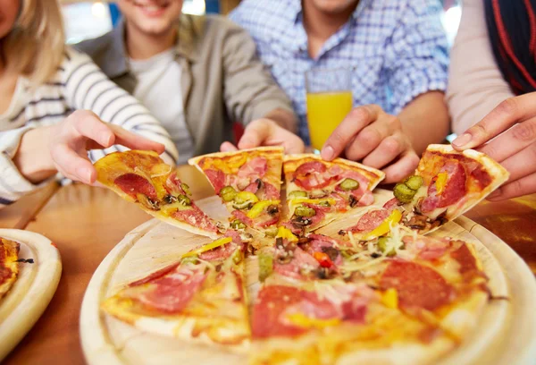

Bienvenido a
Ristorante Joseda
Nuestro rincón mediterráneo. Aquí no solo servimos comida. compartimos una tradición familiar que se cocina a fuego lento. Cada plato es un viaje a las cocinas de nuestras abuelas, donde el aroma a albahaca fresca, el pan recién horneado y las risas alrededor de la mesa eran el corazón del día. Pasa, ponte cómodo y siéntete en casa.
El Secreto de Nuestra Pasta
Hecha a mano, cada mañana. No compramos nuestra pasta, la creamos. Usamos sémola de trigo duro seleccionada y huevos frescos para conseguir la textura perfecta, esa que abraza la salsa en cada bocado. Es un proceso lento, pero cuando pruebes el primer plato, entenderás por qué vale la pena.


El Horno de Leña
Crujiente, ligera y con sabor a leña. Nuestras pizzas siguen la tradición napolitana: una masa madre que reposa durante 48 horas para ser ligera y digestiva, estirada a mano por nuestros maestros pizzeros y cocinada a altísima temperatura con madera de encina. El resultado es una corteza alta, esponjosa y con el toque ahumado perfecto.
Para Compartir
Porque la vida sabe mejor brindando. Una buena comida italiana no está completa sin un buen vino de la casa y una conversación que se alarga. Hemos seleccionado etiquetas que combinan a la perfección con la intensidad de nuestros platos, trayendo lo mejor de los viñedos italianos a tu copa.
